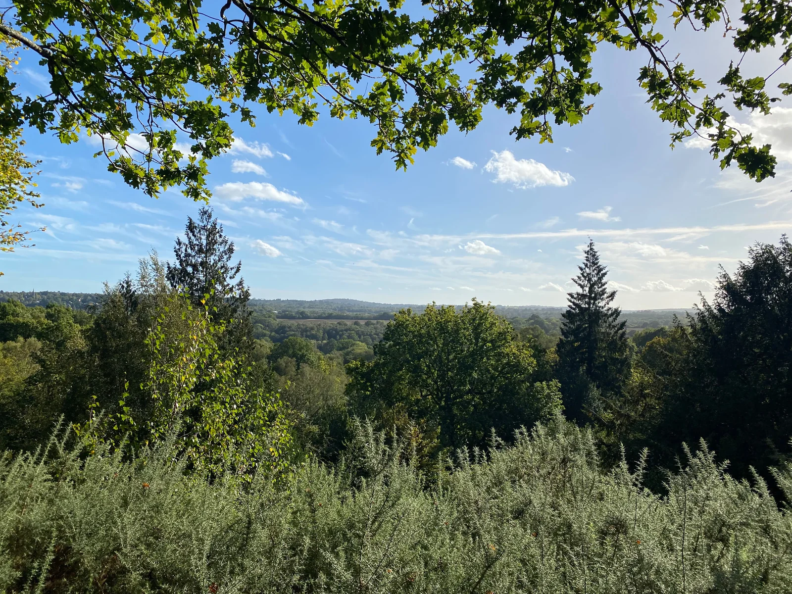

Support Our Work
Whether through annual membership, donations, volunteering, or pledging to the freehold fund, your support keeps the Commons thriving.

Join as a Member of the Friends
Annual member subscriptions provide essential funding for practical conservation equipment, woodland care, path maintenance, and our community campaign.
Full voting membership for individual residents supporting our year-round stewardship.
- Full voting rights at the Charity's Annual General Meeting (AGM)
- Direct contribution to practical tools and path restoration
- Strengthens the charity's mandate for community ownership
- Registered supporter status for Tunbridge Wells & Rusthall Commons
Covers all adults living at the same address, demonstrating united household support.
- Two votes at the Charity's Annual General Meeting (AGM)
- Household support for practical conservation and equipment
- Strengthens community backing for our freehold acquisition bid
- United household commitment to protecting 256 acres
Prefer to Join by Bank Transfer or Cheque?
We also welcome annual memberships paid directly via online banking, standing order, or posted cheque.
Bank: NatWest
Account Name: Friends of Tunbridge Wells and Rusthall Commons
Sort Code: 55-70-13
Account Number: 01028774
Reference: Your Surname + “MEM”
Payable to: Friends of Tunbridge Wells and Rusthall Commons
Please send to:
Chris Gurr
45 Erskine Park Road, Rusthall
Tunbridge Wells, TN4 8UT
Paying by direct bank transfer?
Paying by direct bank transfer? Please let us know your details so we can allocate your membership and register your Gift Aid.
What does your membership support?
The funds we raise have financed many projects over the years, such as major clearance, new paths, purchasing tools and key equipment, and supporting conservation projects alongside the Conservators.
Some of our members join the committee, and some take an active part in practical conservation and volunteer work. From litter-picking and clearance of invasive species to pond and rock clearance, your support helps protect this landscape for everyone.
Make a Donation
One-off and regular donations fund urgent storm repairs, pond restoration, and wildlife surveys. If you are a UK taxpayer, Gift Aid increases the value of your donation by 25% at no extra cost to you.
Bank Transfer or Cheque
If you prefer not to donate online, you can transfer funds directly to our charity account or post a cheque.
Bank: NatWest
Account Name: Friends of Tunbridge Wells and Rusthall Commons
Sort Code: 55-70-13
Account Number: 01028774
Reference: Your Surname + “DONATION”
Payable to: Friends of Tunbridge Wells and Rusthall Commons
Please send to:
Chris Gurr
45 Erskine Park Road, Rusthall
Tunbridge Wells, TN4 8UT

Volunteering on the Commons
Practical conservation on the Commons is organised and led by The Commons Conservators, caring for the land under the 1890 Act. The Friends actively support these efforts, funding tools and equipment and encouraging community involvement.

Join a Volunteer Morning
Sessions are open to everyone, whether you can spare an hour occasionally or wish to join regularly. No prior experience is needed.
- Organised by the Commons Conservators
- Supported by The Friends
- Give time whenever you can.
Pledge to the Community Purchase Bid
A pledge is a confidential promise of financial support to help our registered charity acquire the freehold of Tunbridge Wells and Rusthall Commons. Funds will only be requested when the community sale is legally agreed.
Why Every Pledge Counts
Every pledge—large or small—shows that our local community stands together to protect the Commons for future generations.
- Completely confidential • No upfront payment
- Pledges of any amount make a genuine difference
- Direct email option with Trustee John Barber